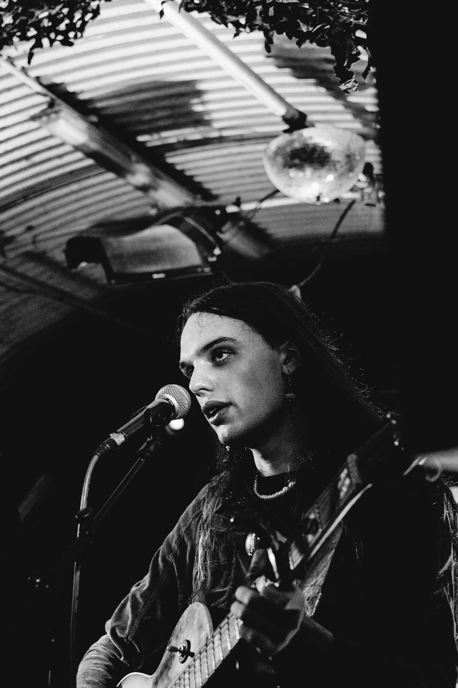
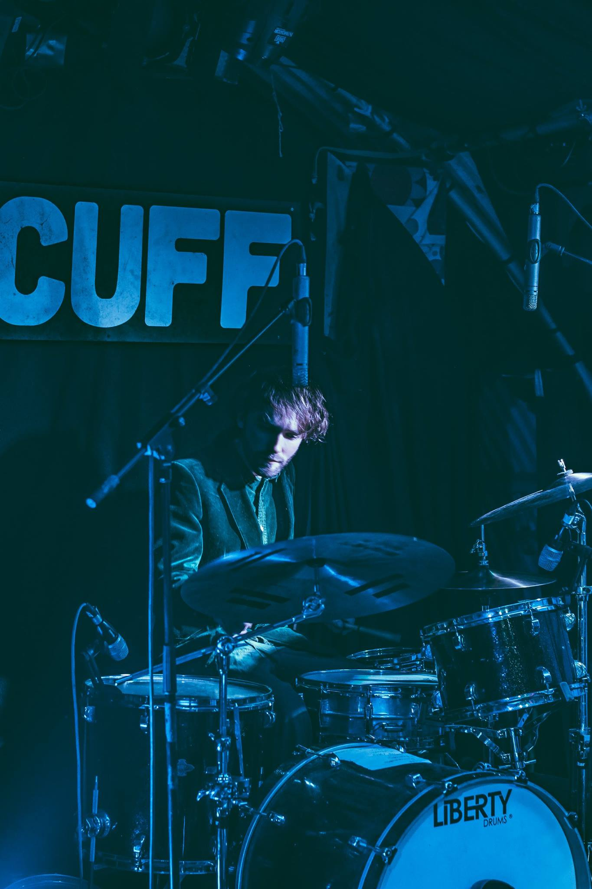
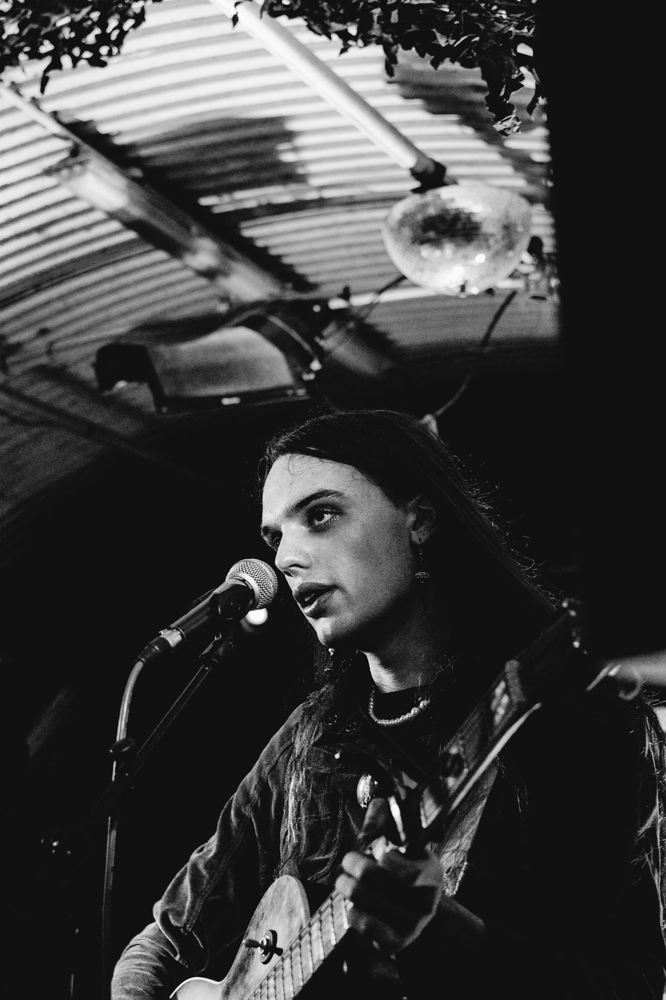
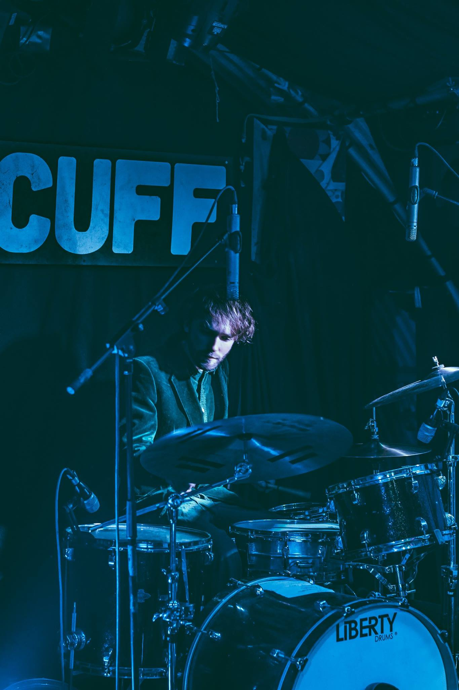

photos by James Wood
bookings/enquiries


photos by James Wood
bookings/enquiries bandcamp
soundcloud
spotify
youtube
The whole performance feels like a meditation on taking up space. Rather than shrinking, Rubie grows exponentially onstage... It is completely arresting to watch them perform, and even unassuming members of the public who have come to the Windmill for a Monday night pint seem caught up. - Freyegg for Brenda Magazine
Rubie vibrates during a set; bellowing with the might of an army and softly plunging like a cleavage - very soon you’re immersed in a total feeling - TheProphet4Profit
Rubie exorcises maleness in the eclectic and experimental, as a spotlit songstress. They channel their intricate songwriting through a performance art lens, often stretching the limits of minimal vocal-centered live setups. Sailing on a soup, weathering binary storms, learning to captain.
FFO: Arthur Russell, PJ Harvey, Julia Holter, Anohni
Current live lineup: Rubie Green on vocals and various instruments. Kit Denison on percussion.
Past Shows:
Night at the Bordello: Impasse @ Off the Cuff w Black Bordello, Me Charles
Eldrich iii @ Sister Midnight Records w Horse Mouth, B Gunge, Barfoot
CSM Sessions @ Central St. Martins Platform Bar, 6th November 2018
a wild pack of stray sounds @ Windmill Brixton (Solo) - 1st Oct 2018 w Hag Atë, Halaca
The Quietus Social 3 @ The Social - 5th September 2018 w Gently Tender
For the Sake of the Tapes @ Sister Midnight Records, 25th August 2018 w Radisson Blue, No Home
Paper Dress Vintage, 22nd August 2018 w Jenny Moore's Mystic Business, Regrouping
Feast, St Luke's Church, 3rd June 2018
Sofar Sounds @ Making Waves, Krakow, February 2018 w Amani
Rectangular Blue @ Chalton Gallery, January 2018
Good Chemistree @ The Amersham Arms, December 2017 w Sol King, Frances Frances, Gravegonzo
¿ CaBa'RARE cLuB ! @ The Star of Kings, November 2017
RAMMED @ Five Miles, November 2017 w Asher Fynn, Lazuli, Trampoline Tax
Rundgang 2017 @ Universität der Künste, Berlin, July 2017
Pornceptual @ about:blank, Berlin, June 2017 w Hyenaz
Metaphonica III @ Central St. Martins, headlining performance, March 2017 w Penny Rimbaud, Charismatic Megafauna, ACM, Sweat
Metaphonica livestream from Futuro House, January 2017
Support for ROCH on her south London tour, July 2016 shows at Deptford Vinyl, Five Bells, Rye Wax & The Nines
press photos
Rubie vibrates during a set; bellowing with the might of an army and softly plunging like a cleavage - very soon you’re immersed in a total feeling - TheProphet4Profit
Rubie exorcises maleness in the eclectic and experimental, as a spotlit songstress. They channel their intricate songwriting through a performance art lens, often stretching the limits of minimal vocal-centered live setups. Sailing on a soup, weathering binary storms, learning to captain.
FFO: Arthur Russell, PJ Harvey, Julia Holter, Anohni
Current live lineup: Rubie Green on vocals and various instruments. Kit Denison on percussion.
Past Shows:
Night at the Bordello: Impasse @ Off the Cuff w Black Bordello, Me Charles
Eldrich iii @ Sister Midnight Records w Horse Mouth, B Gunge, Barfoot
CSM Sessions @ Central St. Martins Platform Bar, 6th November 2018
a wild pack of stray sounds @ Windmill Brixton (Solo) - 1st Oct 2018 w Hag Atë, Halaca
The Quietus Social 3 @ The Social - 5th September 2018 w Gently Tender
For the Sake of the Tapes @ Sister Midnight Records, 25th August 2018 w Radisson Blue, No Home
Paper Dress Vintage, 22nd August 2018 w Jenny Moore's Mystic Business, Regrouping
Feast, St Luke's Church, 3rd June 2018
Sofar Sounds @ Making Waves, Krakow, February 2018 w Amani
Rectangular Blue @ Chalton Gallery, January 2018
Good Chemistree @ The Amersham Arms, December 2017 w Sol King, Frances Frances, Gravegonzo
¿ CaBa'RARE cLuB ! @ The Star of Kings, November 2017
RAMMED @ Five Miles, November 2017 w Asher Fynn, Lazuli, Trampoline Tax
Rundgang 2017 @ Universität der Künste, Berlin, July 2017
Pornceptual @ about:blank, Berlin, June 2017 w Hyenaz
Metaphonica III @ Central St. Martins, headlining performance, March 2017 w Penny Rimbaud, Charismatic Megafauna, ACM, Sweat
Metaphonica livestream from Futuro House, January 2017
Support for ROCH on her south London tour, July 2016 shows at Deptford Vinyl, Five Bells, Rye Wax & The Nines
press photos